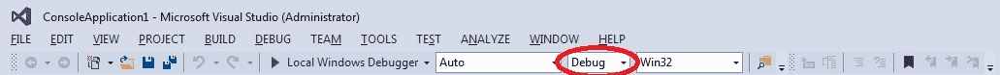
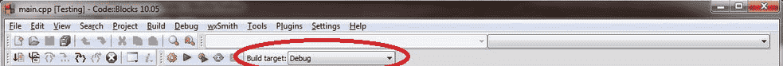

0.9 — Configuration de votre compilateur : configurations de compilation
Une configuration de compilation (aussi appelée cible de compilation, en anglais build target) est un ensemble de paramètres de projet qui détermine la façon dont votre EDI compilera votre projet. Cette configuration comprend généralement des éléments tels que le nom de l'exécutable, les répertoires dans lesquels l'EDI doit chercher les autres fichiers de code et de bibliothèques, la conservation ou la suppression des informations de débogage, le niveau d'optimisation appliqué par le compilateur à votre programme, etc. En règle générale, vous devriez laisser ces paramètres à leurs valeurs par défaut, sauf si vous avez une raison précise de les modifier.
Lorsque vous créez un nouveau projet dans votre EDI, la plupart des EDI configurent automatiquement deux configurations de compilation : une configuration de version (release) et une configuration de débogage (debug).
La configuration de débogage est conçue pour vous aider à déboguer votre programme ; c'est généralement celle que vous utiliserez lorsque vous écrivez vos programmes. Cette configuration désactive toutes les optimisations et inclut des informations de débogage, ce qui rend vos programmes plus volumineux et plus lents, mais beaucoup plus faciles à déboguer. La configuration de débogage est généralement sélectionnée par défaut comme configuration active. Nous reviendrons plus en détail sur les techniques de débogage dans une leçon ultérieure.
La configuration de version est conçue pour être utilisée lorsque vous diffusez votre programme au public. Cette version est généralement optimisée en taille et en performance, et ne contient pas les informations de débogage supplémentaires. Comme la configuration de version inclut toutes les optimisations, ce mode est également utile pour tester les performances de votre code (ce que nous vous montrerons comment faire plus tard dans cette série de tutoriels).
Lorsque le programme Hello World (de la leçon 0.7 -- Compilation de votre premier programme) a été compilé avec Visual Studio, l'exécutable produit en configuration de débogage faisait 65 Ko, tandis que l'exécutable compilé en version faisait 12 Ko. Cette différence est due en grande partie aux informations de débogage supplémentaires conservées dans la version de débogage.
Bien que vous puissiez créer vos propres configurations de compilation personnalisées, vous n'en aurez que rarement besoin, sauf si vous souhaitez comparer deux compilations réalisées avec des paramètres de compilateur différents.
Bonne pratique
Utilisez la configuration de compilation debug lorsque vous développez vos programmes. Lorsque vous êtes prêt à diffuser votre exécutable à d'autres personnes, ou à tester les performances, utilisez la configuration de compilation release.
Certains EDI (par exemple Visual Studio) créent aussi des configurations de compilation distinctes pour différentes plateformes. Par exemple, Visual Studio crée des configurations pour les plateformes x86 (32 bits) et x64 (64 bits).
Changer de configuration de compilation
Pour les utilisateurs de Visual Studio
Il existe plusieurs façons de passer de debug à release dans Visual Studio. La plus simple consiste à sélectionner directement l'option dans la liste déroulante Solution Configurations de la barre d'outils standard :

Sélectionnez Debug pour le moment.
Vous pouvez également accéder au gestionnaire de configurations en sélectionnant Menu Build > Configuration Manager, puis modifier la configuration de solution active.
À droite de la liste déroulante Solution Configurations, Visual Studio propose aussi une liste déroulante Solution Platform qui vous permet de passer de la plateforme x86 (32 bits) à x64 (64 bits).
Pour les utilisateurs de Code::Blocks
Dans Code::Blocks, vous devriez voir un élément appelé Build Target dans la barre d'outils du compilateur :

Sélectionnez Debug pour le moment.
Pour les utilisateurs de gcc et Clang
Ajoutez -ggdb à la ligne de commande pour les compilations de débogage, et -O2 -DNDEBUG pour les compilations de version. Utilisez pour le moment les options de compilation de débogage.
Pour GCC et Clang, l'option -O# permet de contrôler les paramètres d'optimisation. Les options les plus courantes sont les suivantes :
-O0est le niveau d'optimisation recommandé pour les compilations de débogage, car il désactive l'optimisation. C'est le réglage par défaut.-O2est le niveau d'optimisation recommandé pour les compilations de version, car il applique des optimisations qui devraient être bénéfiques pour tous les programmes.-O3ajoute des optimisations supplémentaires qui peuvent être plus ou moins performantes que-O2selon le programme. Une fois votre programme écrit, vous pouvez essayer de compiler votre version avec-O3au lieu de-O2et mesurer laquelle est la plus rapide.
Consultez https://gcc.gnu.org/onlinedocs/gcc/Optimize-Options.html pour des informations sur les options d'optimisation.
Pour les utilisateurs de VS Code
Lors de la première exécution de votre programme, un nouveau fichier appelé tasks.json a été créé dans le dossier .vscode de l'explorateur. Ouvrez le fichier tasks.json, trouvez « args », puis repérez la ligne « ${file} » dans cette section.
Au-dessus de la ligne « ${file} », ajoutez une nouvelle ligne contenant la commande suivante (une par ligne) pour le débogage :
"-ggdb",
Au-dessus de la ligne « ${file} », ajoutez les nouvelles lignes contenant les commandes suivantes (une par ligne) pour les compilations de version :
"-O2",
"-DNDEBUG",
Modifier les configurations de compilation
Dans les prochaines leçons, nous vous montrerons comment modifier certains paramètres de vos configurations de compilation. Chaque fois que vous changez un paramètre de projet, nous vous recommandons d'appliquer la modification à toutes les configurations de compilation.
Cela évite de modifier la mauvaise configuration et garantit que le changement reste appliqué si vous changez de configuration plus tard.
Astuce
Chaque fois que vous mettez à jour les paramètres de votre projet, appliquez la modification à toutes les configurations de compilation (sauf si cela n'est pas approprié pour une raison particulière).
Source originale : https://www.learncpp.com/cpp-tutorial/configuring-your-compiler-build-configurations/